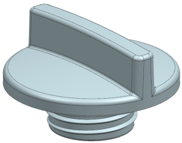
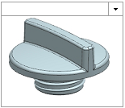
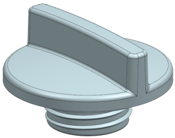
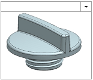

保存更改
编辑完成后，保存更改后的部件很重要，适合窗口后保存装配也是一个好习惯。
-
按下 Home 以将视图定向到正等测图。

-
点击标准工具条上的保存
 。
。阅读保存命令的工具提示，注意这个命令将保存工作部件和任何已修改的部件。
历史记录资源板中的缩略图也将更新。

这个装配将会在下一个练习中使用。
编辑完成后，保存更改后的部件很重要，适合窗口后保存装配也是一个好习惯。
按下 Home 以将视图定向到正等测图。

点击标准工具条上的保存  。
。
阅读保存命令的工具提示，注意这个命令将保存工作部件和任何已修改的部件。
历史记录资源板中的缩略图也将更新。

这个装配将会在下一个练习中使用。